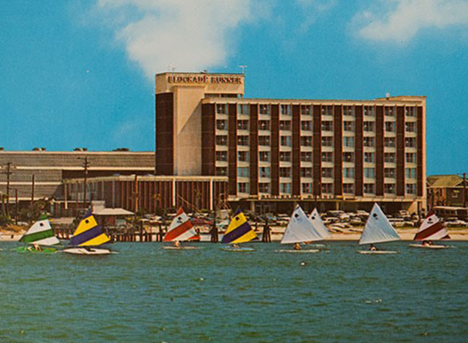
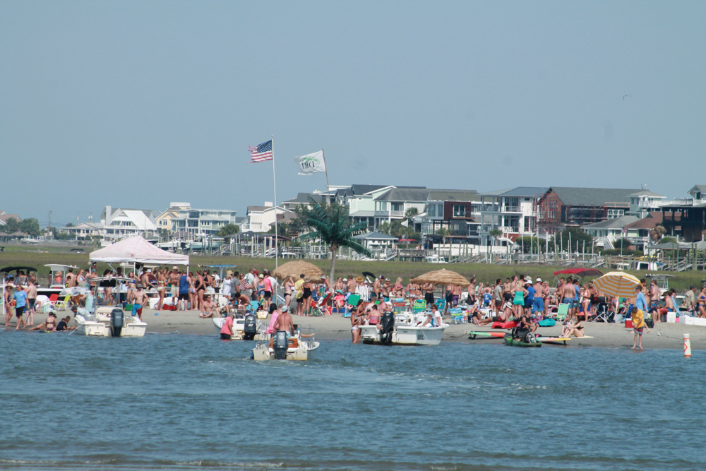

<!DOCTYPE html>
<html lang="en">
<head>
    <meta charset="UTF-8">
    <meta name="viewport" content="width=device-width, initial-scale=1.0">
    <title>Webmap</title>

    <link rel="stylesheet" href="https://unpkg.com/leaflet@1.6.0/dist/leaflet.css"
    integrity="sha512-xwE/Az9zrjBIphAcBb3F6JVqxf46+CDLwfLMHloNu6KEQCAWi6HcDUbeOfBIptF7tcCzusKFjFw2yuvEpDL9wQ=="
    crossorigin=""/>

     <!-- Make sure you put this AFTER Leaflet's CSS -->
    <script src="https://unpkg.com/leaflet@1.6.0/dist/leaflet.js"
    integrity="sha512-gZwIG9x3wUXg2hdXF6+rVkLF/0Vi9U8D2Ntg4Ga5I5BZpVkVxlJWbSQtXPSiUTtC0TjtGOmxa1AJPuV0CPthew=="
    crossorigin=""></script>

    <script src = "./dri_4326.geojson"></script>
    <script src = "./pier_4326.geojson"></script>

</head>
<body>
    <div id="mapid"></div>
    <style>
        #mapid { width: 900px; height: 500px; }
    </style>

    
    <script>
      var map = L.map('mapid').setView([34.2088, -77.8020], 14);

      var ESRI = L.tileLayer('https://server.arcgisonline.com/ArcGIS/rest/services/World_Imagery/MapServer/tile/{z}/{y}/{x}', {})

      var OSM = L.tileLayer('http://{s}.tile.openstreetmap.org/{z}/{x}/{y}.png', {}).addTo(map);

      var tile = L.tileLayer('./{z}/{x}/{y}.png', {});

      var tiles = {
          "OSM":OSM,
          "ESRI": ESRI,
          "Tile":tile,
          }

      L.control.layers(tiles).addTo(map);

      var br_popup = "The Blockade Runner; This hotel has been on the beach for almost a century<br/>";

      var home_popup = "My house and the view. It just turned 90 this year!<br/>";
        
      var greenIcon = new L.Icon({
        iconUrl: 'https://raw.githubusercontent.com/pointhi/leaflet-color-markers/master/img/marker-icon-2x-yellow.png',
        shadowUrl: 'https://cdnjs.cloudflare.com/ajax/libs/leaflet/0.7.7/images/marker-shadow.png',
        iconSize: [25, 41],
        iconAnchor: [12, 41],
        popupAnchor: [1, -34],
        shadowSize: [41, 41]
        });

        var orangeIcon = new L.Icon({
        iconUrl: 'https://raw.githubusercontent.com/pointhi/leaflet-color-markers/master/img/marker-icon-2x-orange.png',
        shadowUrl: 'https://cdnjs.cloudflare.com/ajax/libs/leaflet/0.7.7/images/marker-shadow.png',
        iconSize: [25, 41],
        iconAnchor: [12, 41],
        popupAnchor: [1, -34],
        shadowSize: [41, 41]
        });

        var goldIcon = new L.Icon({
        iconUrl: 'https://raw.githubusercontent.com/pointhi/leaflet-color-markers/master/img/marker-icon-2x-gold.png',
        shadowUrl: 'https://cdnjs.cloudflare.com/ajax/libs/leaflet/0.7.7/images/marker-shadow.png',
        iconSize: [25, 41],
        iconAnchor: [12, 41],
        popupAnchor: [1, -34],
        shadowSize: [41, 41]
        });


        L.marker([34.209877, -77.803003], {icon: greenIcon}).addTo(map)
            .bindPopup(home_popup);
        L.marker([34.203478, -77.798893], {icon:goldIcon}).addTo(map)
            .bindPopup(br_popup);
        L.marker([34.193512, -77.804786],{icon: orangeIcon}).addTo(map)
            .bindPopup("The Oceanic Pier");

        var dri_popup = "Diminishing Republic Island<br/>";
            
        L.geoJSON(dri)
        .bindPopup(dri_popup)
        .addTo(map);
        L.geoJSON(pier).addTo(map)
        .bindPopup("Oceanic Pier. It used to be a lot longer than it is today")
        .addTo(map);
    </script>
</body>
</html>